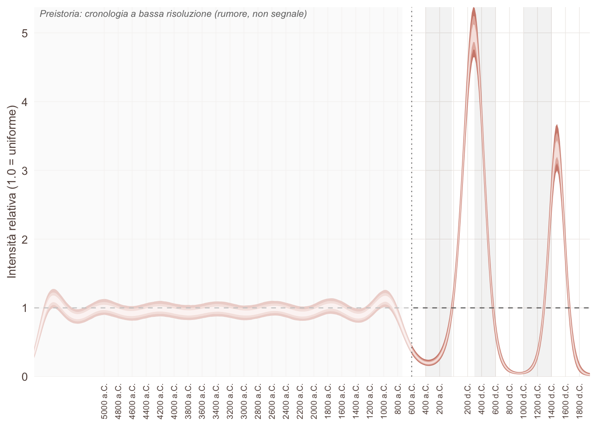

Cronologia
La cronologia del sito, ricostruita dalle tipologie ceramiche raccolte in superficie, mostra una presenza continua dalla preistoria all’età moderna con un’intensificazione principale in età imperiale romana e tardoantica, e presenze significative anche in età bassomedievale e moderna.
Note metodologiche
La datazione derivante dalle tipocronologie ceramiche è tipicamente espressa in forma di intervalli di tempo, riflettendo l’incertezza intrinseca nella classificazione cronologica. Ogni frammento ceramico è quindi associato a un intervallo specifico, che può essere più o meno ampio a seconda della precisione della tipocronologia o di eventuali contesti stratigrafici. Il modello utilizzato (un processo di Poisson non omogeneo con intensità log-Gaussiana, approssimata tramite basi di Hilbert) usa questi intervalli senza forzare una data specifica: distribuisce la presenza di ciascun reperto lungo tutto il suo intervallo di datazione, e stima una densità continua nel tempo che “prende in prestito” informazioni dai periodi adiacenti, producendo una ricostruzione più coerente di quella che si otterrebbe da un semplice conteggio per fasce cronologiche.
È fondamentale distinguere tra frequenze e probabilità di occupazione o esistenza. Questo grafico non rappresenta la reale cronologia di occupazione del sito, ma mostra quanti reperti, in base alle loro date assegnate, potrebbero esistere in un dato periodo. Un picco non indica necessariamente un’intensificazione dell’occupazione: potrebbe riflettere anche la maggiore durata o riconoscibilità delle tipologie ceramiche associate a quel periodo.
Le finestre di datazione più larghe di 1000 anni (in particolare ceramica ad impasto e selce lavorata, insieme il 64% del dataset in un’unica finestra di 5400 anni, 6000-600 a.C.) sono suddivise in sotto-finestre di 200 anni con conteggio proporzionale prima di stimare il modello. Senza questa correzione, il modello concentrava questa massa non ancora risolta ovunque vi fosse una minima evidenza puntuale nelle vicinanze, producendo un picco artificiale in preistoria privo di supporto nelle datazioni specifiche. La correzione non esclude né altera i dati: distribuisce ciascun reperto uniformemente sul proprio intervallo, la stessa assunzione su cui si basa il metodo aoristico stesso, resa esplicita nei dati che il modello riceve.
Anche dopo questa correzione, la curva prima del 600 a.C. mostra piccole ondulazioni che non corrispondono a nessuna evidenza specifica: sono l’incertezza propria del modello in un tratto dove l’unica informazione disponibile è una massa ampia e indifferenziata. Per questo motivo quel tratto è mostrato sbiadito nel grafico. Non è un difetto da correggere ulteriormente: allargare la scala di lunghezza del modello o ridurre il peso di questi materiali sono stati entrambi verificati, e il secondo tentativo peggiora le cose, poiché è proprio quella massa a mantenere la curva stabile in un tratto altrimenti privo di vincoli. Datazioni più precise su questi materiali, quando disponibili, permetteranno di affinare questa parte della cronologia e di rimuovere la sfumatura.
Per ottenere una vera ricostruzione della cronologia di occupazione, sarebbe necessario integrare questi risultati con altri tipi di dati, come scavi (e quindi stratigrafie), datazioni assolute o indicatori funzionali della presenza umana.
Informazioni supplementari
Macroclassi cronotipologiche
| Cronologia | ||
|---|---|---|
| Materiale | Datazione_da | Datazione_a |
| laterizi | -399 | 1599 |
| tegole_piane_romane | -300 | 699 |
| tegola_pettinata | 300 | 699 |
| macine | n.d. | n.d. |
| scorie_metalliche | n.d. | n.d. |
| ceramica_acroma | -399 | 1799 |
| ceramica_acroma_medievale | 1200 | 1599 |
| ceramica_protomaiolica | 1200 | 1350 |
| ceramica_dipinta | -399 | 1399 |
| ceramica_RMR | 1200 | 1350 |
| ceramica_vernice_rossa_interna | 1 | 199 |
| ceramica_smaltata | 1400 | 1899 |
| ceramica_invetriata | 1200 | 1899 |
| ceramica_invetriata_verde | 1201 | 1399 |
| ceramica_doppio_bagno | 1400 | 1500 |
| ceramica_vetrina_pesante | 1000 | 1099 |
| ceramica_invetriata_graffita | 1500 | 1899 |
| ceramica_graffita_bizantina | 1100 | 1299 |
| ceramica_maiolica | 1400 | 1899 |
| ceramica_invetriata_eta_moderna | 1400 | 1899 |
| pareti_sottili | -25 | 150 |
| ceramica_TSI | -25 | 99 |
| ceramica_TSA | 101 | 650 |
| ceramica_TSA_A | 175 | 299 |
| ceramica_TSA_C | 175 | 499 |
| ceramica_TSA_D | 300 | 625 |
| ceramica_eastern_sigillata | -25 | 299 |
| ceramica_CAC | 175 | 325 |
| ceramica_PRSW | 400 | 599 |
| ceramica_fuoco | -399 | 1799 |
| ceramica_ICW | 201 | 350 |
| ceramica_fuoco_invetriata | 1300 | 1899 |
| ceramica_lucerna | 1 | 599 |
| ceramica_dolia_GC | n.d. | n.d. |
| ceramica_impasto | -6000 | -600 |
| ceramica_vernice_nera | -499 | -100 |
| ceramica_amphoras | -201 | 599 |
| ceramica_amphoras_italic | -199 | 199 |
| ceramica_amphoras_african | 200 | 599 |
| ceramica_amphoras_eastern | 1 | 550 |
| ceramica_geometrica | -800 | -300 |
| ceramica_pasta_grigia | -199 | -1 |
| ceramica_non_identificata | -399 | 1799 |
| pesi_telaio | n.d. | n.d. |
| pesi_pesca | n.d. | n.d. |
| intonaco | n.d. | n.d. |
| vetro | n.d. | n.d. |
| selce_lavorata | -6000 | -600 |
| pipa_fittile | n.d. | n.d. |
| ceramica_bari_type | 1401 | 1600 |
Modello NHPP-HSGP calcolato il 18 settembre 2026. Dati di campagna aggiornati al 18 settembre 2026.